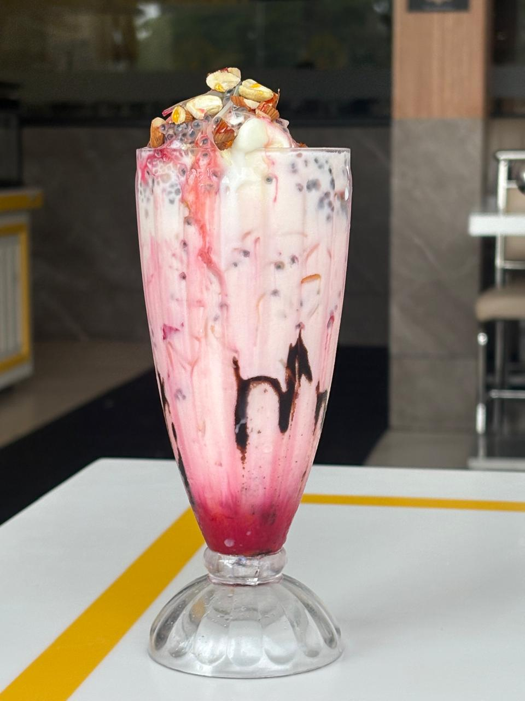
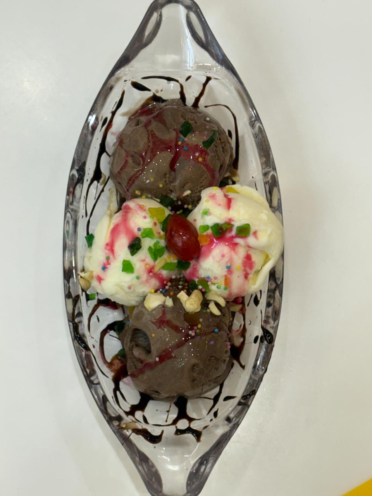
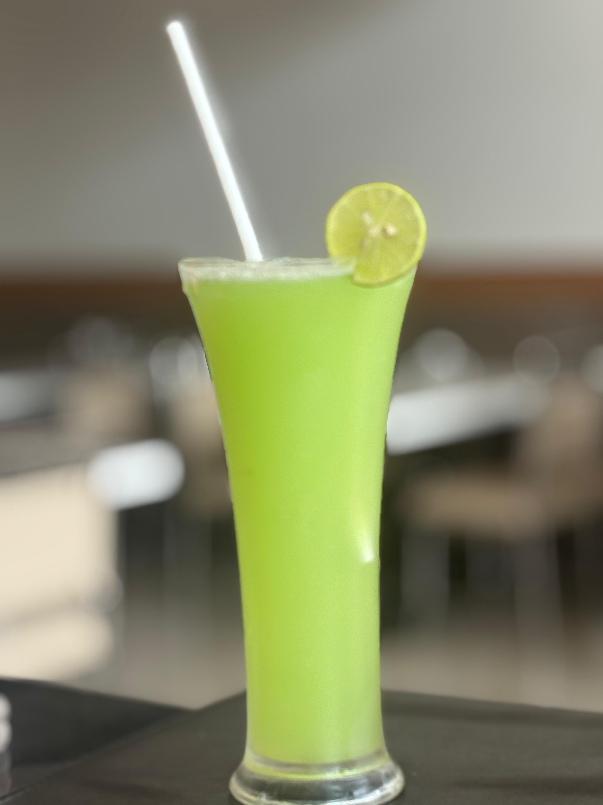

Dining out with family is about more than just food; it's about creating memories in a welcoming environment. Mathuram Cafe is celebrated as the top family restaurant in Brahmavara, offering a spacious, comfortable, and elegant setting for families of all sizes. Located prominently Opposite Krishi Kendra, we provide the perfect backdrop for your family gatherings.

Ambiance Designed for Families
We understand that family dining requires comfort and convenience. Our restaurant features both an AC Fine-Dine section for a more premium experience and a relaxed Non-AC seating area. The spacious seating arrangements ensure that large families can sit together comfortably without feeling crowded.
The interior is designed with a warm, South Indian aesthetic that feels both premium and inviting, making it an excellent choice for celebrating birthdays, anniversaries, or simply enjoying a weekend family lunch.
A Menu for Every Generation
One of the biggest challenges of dining out with family is catering to different tastes. At Mathuram Cafe, our extensive 100% pure veg menu solves this problem. Grandparents can enjoy our traditional, easy-to-digest South Indian meals, while the younger generation might prefer our exciting Indo-Chinese or Chats options.
From rich paneer gravies for the main course to sweet traditional Mithai for dessert, our menu bridges the generational gap, ensuring everyone leaves with a smile.

Hygiene and Safety First
When dining with children and elderly family members, hygiene is a top priority. As a premier family restaurant in Brahmavara, we maintain impeccable cleanliness in our dining areas, restrooms, and kitchen. You can dine with peace of mind knowing that your family's health and safety are our utmost concern.
Convenient Location and Parking
Located right opposite Krishi Kendra at Laxmi Empire, we are incredibly easy to find. We offer ample parking space, which is a crucial factor for family outings. For families on the go, our unique Drive-Thru service offers a convenient way to pick up high-quality food without leaving the comfort of your car.
Make your next family meal special. View our menu and plan your visit to Mathuram Cafe, where great food and family come together.
